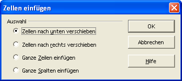

Basiskurs Calc
Schulungsunterlagen zu OpenOffice.org
Herausgegeben durch das OpenOffice.org - Germanophone-Projekt
© Copyright 2003 Klaus Endelmann
Inhaltsverzeichnis
|
1 Starten 6 2 Beenden 7 3 Die Bedienung 7 4 Das Anwendungsfenster 8 5 Eingabe 9 5.1 Allgemeines 9 5.1.1 Zelle 9 5.1.2 Zeile 9 5.1.3 Spalte 9 5.1.4 Tabellenblatt 9 5.1.5 Tabellendokument 9 5.2 Positionierung des Cursors 9 5.3 Bearbeitung und Korrektur eines Zellinhaltes 10 5.4 Spaltenbreite und Zeilenhöhe 10 5.5 Besonderheit bei der Eingabe 10 5.5.1 Text 10 5.5.2 Zahlen 10 5.6 Markieren mit Maus und Tastatur 11 5.6.1 Gesamtes Tabellenblatt 11 5.6.2 Eine Spalte 11 5.6.3 Eine Zeile 11 5.6.4 Zellbereich 12 5.6.5 Aktuelle Zelle in der Markierung 12 5.6.6 Markieren mehrerer Bereiche 12 5.6.6.1 Umschalten in der Statusleiste und markieren mit der Maus: 12 5.6.7 Datenblock 12 5.7 Zellen verschieben und kopieren 12 5.7.1 Mit der Maus 12 5.7.2 Befehle aus der Symbolleiste und mit Tastatur 13 5.8 Befehle Rückgängig machen 13 5.9 Ausfüllen, Aufzählungen 13 5.9.1 Ausfüllen 13 5.9.2 Aufzählungen 14 5.9.3 Formeln 15 6 Dokumente drucken 16 6.1 Der Schnelldruck 16 6.2 Drucken über den Dialog Drucken 16 6.2.1 Zusatzeinstellungen 17 6.3 Seitenansicht / Seitendruck 17 6.3.1 Das Symbol Seitenformat 18 7 Dokumente speichern und schließen 19 7.1 Wechsel zwischen Dokumenten 20 7.2 Wechsel zwischen Tabellenblättern 20 8 Mit Formeln arbeiten 21 8.1 Einfache Formeln 21 8.2 Eingabe einer Formel 21 8.2.1 Eingabe per Tastatur 21 8.2.2 Eingabe mit Mausunterstützung 21 8.2.3 Der Funktionsautopilot 22 8.2.4 Vorhandene Formeln in einer Zelle bearbeiten 23 8.2.5 Das Symbol Summe 23 8.2.6 Zellbereiche 23 8.3 Relative und absolute Bezüge 24 8.3.1 Ein Beispiel 24 8.3.2 Relative Adressierung 25 8.3.3 Absolute Adressierung 25 8.3.4 Mischformen der Adressierung 26 9 Einfache Formatierungen 27 9.1 Schriftart, Schriftgrad 27 9.2 Fett, kursiv und unterstrichen 27 9.3 Zellinhalte ausrichten 27 9.4 Farbe 27 10 Suchen und Ersetzen 28 11 Rechtschreibung und Silbentrennung 29 12 Grundlagen der Formatierung 30 12.1 Übersicht 30 12.2 Zelle 30 12.2.1 Zahlen 30 12.2.2 Schrift 32 12.2.3 Schrifteffekt 33 12.2.4 Ausrichtung 34 12.2.5 Umrandung 35 12.2.6 Hintergrund 36 12.2.7 Zellschutz 36 12.3 Zeile / Spalte 38 12.4 Tabelle 38 12.4.1 Umbenennen... 38 12.4.2 Ausblenden 39 12.4.3 Weitere Formatierungen für Tabellen 39 12.4.4 Einfügen 40 12.4.5 Löschen 40 12.4.6 Verschieben/kopieren 41 12.4.7 Alle Tabellen auswählen 41 12.4.8 Ausschneiden, kopieren, einfügen 41 12.5 Zellen zusammenfassen 41 12.6 Seite 42 12.6.1 Verwalten 42 12.6.2 Seite 43 12.6.3 Umrandung 44 12.6.4 Hintergrund 44 12.6.5 Kopfzeile 44 12.6.5.1 Bearbeiten 44 12.6.6 Fußzeile 45 12.6.7 Tabelle 45 13 Weiterführende Textgestaltung 46 13.1 Manueller Umbruch 46 13.1.1 Zeilenumbruch 46 13.1.2 Spaltenumbruch 46 13.2 Zellen einfügen 46 13.3 Zeilen / Spalten einfügen 47 13.4 Tabelle einfügen 47 13.5 Externe Daten einfügen 47 13.6 Sonderzeichen 49 13.7 Hyperlink 50 13.8 Funktion einfügen 50 13.9 Funktionsliste 51 13.10 Arbeiten mit Namen 51 13.10.1 Festlegen 51 13.10.2 Zusätze 52 13.10.2.1 Bereichsart 53 13.10.2.2 Druckbereich 53 13.10.2.3 Filter 53 13.10.2.4 Wiederholungsspalte 53 13.10.2.5 Wiederholungszeile 53 13.10.3 Namen einfügen 53 13.10.3.1 Namen einfügen 53 13.10.3.2 Liste 54 13.10.4 Namen erzeugen 54 13.10.4.1 Kopfzeile 54 13.10.4.2 Linker Spalte 54 13.10.4.3 Fußzeile 54 13.10.4.4 Rechter Spalte 54 13.10.5 Beschriftungen 55 13.11 Notizen 55 13.12 Autoformat 56 13.12.1 Hinzufügen 56 13.13 Bearbeitung mehrerer Tabellenblätter ("durchschreiben") 57 14 Weitere Funktionen 58 14.1 Die WENN (IF) Funktion 58 14.2 SVERWEIS und WVERWEIS 58 14.2.1 SVERWEIS 58 14.2.2 Beispiel 58 14.2.2.1 Beschreibung der Daten 58 14.2.2.2 Beschreibung der Formel 59 14.2.2.3 Beschreibung des Beispiels 59 14.2.3 WVERWEIS 60 14.2.4 Syntax 60 14.3 Kategorien und Funktionen 60 14.3.1 Datenbank 61 14.3.2 Datum & Zeit 61 14.3.3 Finanz 61 14.3.4 Information 61 14.3.5 Logisch 61 14.3.6 Mathematik 61 14.3.7 Matrix 61 14.3.8 Statistik 61 14.3.9 Tabelle 62 14.3.10 Text 62 14.3.11 Add In 62 14.4 Datum und Uhrzeit 62 14.4.1 Allgemeines 62 14.4.2 Ändern des Startwertes 62 14.4.3 Interpretation einer zweistelligen Jahreszahl 63 14.4.4 Rechnen mit Datum 64 14.4.5 Zeitdifferenz berechnen 65 14.4.6 Berechnungsbeispiele für Datum und Uhrzeit 66 15 Tabellenübergreifende Bezüge 67 15.1 Ansicht mehrerer Tabellenblätter 67 15.2 Zellbezug auf andere Tabellenblätter 67 15.3 Zellbezug auf andere Arbeitsmappen 68 15.4 Eine Tabelle in ein Textdokument einbinden 69 16 Tabellen verwalten 70 16.1 Allgemein 70 16.2 Arbeitsverzeichnis 71 16.3 Schützen eines Dokuments, einer Tabelle, einer Zelle 71 16.3.1 Vergeben eines Kennwortes für das Öffnen eines Dokument 71 16.3.2 Kennwortschutz für das Öffnen eines Dokumentes aufheben 72 16.3.3 Vergeben eines Kennwortes für das Ändern eines Dokumentes 72 16.3.4 Kennwortschutz für das Ändern eines Dokumentes aufheben 72 16.3.5 Zellschutz 73 16.3.5.1 Voreinstellung für den Zellschutz 73 16.3.5.2 Zellschutz aufheben 73 16.4 Weitere Dokumentoptionen 74 16.5 Dokumenteigenschaften 75 17 Diagramme 76 17.1 Diagramme erstellen 76 17.2 Diagramme bearbeiten 79 17.2.1 Verschieben, Größe ändern, löschen 80 17.2.2 Weitere Befehle 80 17.2.3 Die Symbolleiste 80 17.2.3.1 Titel ein/aus 80 17.2.3.2 Legende ein/aus 80 17.2.3.3 Achsentitel ein/aus 81 17.2.3.4 Achsen ein/aus 81 17.2.3.5 Gitter horizontal ein/aus 81 17.2.3.6 Gitter vertikal ein/aus 81 17.2.3.7 Diagrammtyp bearbeiten 81 17.2.3.8 Autoformat 81 17.2.3.9 Diagrammdaten 81 17.2.3.10 Daten in Reihe 81 17.2.3.11 Daten in Spalten 81 17.2.3.12 Textskalierung 82 17.2.3.13 Diagramm neu anordnen 82 17.2.4 Diagramm erweitern 82 17.2.5 Daten entfernen, ändern 82 17.2.6 Kontextmenü für Diagrammelemente 82 18 Bearbeiten großer Tabellen 83 18.1 Der Navigator 83 18.1.1 Allgemein 83 18.1.2 Navigator-Symbolleiste für Tabellendokumente 84 18.2 Hyperlinks 84 18.3 Tabellen zoomen 85 18.4 Fenster teilen 85 18.5 Zeilen und Spalten fixieren 86 18.6 Tabellen(teile) sortieren 86 18.6.1 Einfache auf- oder absteigende Sortierung 86 18.6.2 Weitere Sortierungsmöglichkeiten 87 18.7 Eingabekorrektur 88 18.8 Zellinhalte (neu) berechnen 88 19 Spezielle Gestaltungsmöglichkeiten 90 19.1 Bedingte Formatierung 90 19.1.1 Beispiel zur bedingten Formatierung: Zahlenwerte erzeugen 90 19.1.2 Beispiel zur bedingten Formatierung: Zellvorlagen definieren 91 19.1.3 Beispiel zur bedingten Formatierung: Mittelwert berechnen 91 19.1.4 Beispiel zur bedingten Formatierung: Zellvorlagen anwenden 91 19.1.5 Beispiel zur bedingten Formatierung: Zellvorlagen kopieren 92 19.1.6 Zellwerte auswerten 92 19.2 Negative Zahlen in rot darstellen 93 19.3 Eingabeprüfungen 94 20 Formatvorlagen 95 20.1 Formatierung 95 20.2 Direkte und indirekte Formatierungen 95 20.3 Formatvorlagen verwenden 95 20.3.1 Der Stylist 96 20.3.2 Formatvorlagen bearbeiten 96 20.3.3 Formatvorlagen neu erstellen und ändern 97 21 Grafiken und Bilder 98 21.1 Grafik einfügen 98 21.2 Grafik formatieren 99 21.3 Zeichenfunktionen 100 21.4 Bearbeitung von Zeichnungselementen 100 21.4.1 Ändern der Grüße 100 21.4.2 Verschieben 100 21.4.3 Formatieren 101 21.5 Text, Lauftext, Legende 101 21.5.1 Allgemein 101 21.5.2 Text eingeben und ändern 101 21.6 Texteffekte 101 21.7 Frame (Rahmen) 102 22 Datenimport und -export, Objekte (OLE) 104 22.1 Importfilter 104 22.2 Exportfilter 104 22.3 Objekte (OLE) 104 22.3.1 Allgemein 104 22.3.2 Erzeugen eines Objektes 105 22.3.3 Bearbeiten eines Objektes 106 23 Anpassen Ihres Programms 107 23.1 Allgemein 107 23.2 Anpassen der Oberflächenbefehle 107 24 Basiseinstellungen 111 25 Was fehlt 113 26 PUBLIC DOCUMENTATION LICENSE 114 |
Beispielkapitel:
13.2 Zellen einfügen
Einfügen --> Zellen...
|
Das Einfügen von Zellen basiert auf der aktuellen Zellauswahl. So ist es möglich, gleichzeitig mehrere Zellen, Zeilen oder Spalten einzufügen. Der folgende Dialog zeigt alle vorhandenen Möglichkeiten. |
 |
Zellen nach unten verschieben: Die ausgewählten Zellen und die darunter liegenden Zellen werden nach unten geschoben. Besteht die aktuelle Auswahl zum Beispiel aus 3 Zeilen und 4 Spalten, werden die Zellen dieser 4 Spalten um 3 Zeilen nach unten verschoben.
Zellen nach rechts verschieben: Die ausgewählten Zellen und die Zellen rechts davon werden nach rechts geschoben. Besteht die aktuelle Auswahl zum Beispiel aus 3 Zeilen und 4 Spalten, werden die Zellen dieser 3 Zeilen um 4 Spalten nach rechts verschoben.
Ganze Zeilen einfügen: Verschiebt alle Zeilen ausgehend von der Zellauswahl nach unten. Es werden mehrere Zeilen eingefügt, wenn die Zellauswahl mehrere Zeilen umfasst.
Ganze Spalten einfügen: Verschiebt alle Spalten ausgehend von der Zellauswahl nach rechts. Es werden mehrere Spalten eingefügt, wenn die Zellauswahl mehrere Spalten umfasst.
Download des gesamten Dokuments:
- Im Format sxw (2 Dateien): BasiskursCalc (1,7 MB) frame_demo (40,5 KB)
- Im Format PDF: BasiskursCalc (3,9 MB)